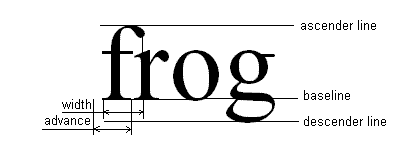

To properly measure text, you need to learn a few methods and some mistakes to avoid. Font metrics are measurements of text rendered by a
Fontobject such as the height of a line of text in the font. The most common way to measure text is to use aFontMetricsinstance which encapsulates this metrics information. For example:// get metrics from the graphics FontMetrics metrics = graphics.getFontMetrics(font); // get the height of a line of text in this font and render context int hgt = metrics.getHeight(); // get the advance of my text in this font and render context int adv = metrics.stringWidth(text); // calculate the size of a box to hold the text with some padding. Dimension size = new Dimension(adv+2, hgt+2);This way is sufficient for many applications to evenly space lines of text or to size Swing components.Note the following:
- The metrics are obtained from the
Graphicsclass, because this class encapsulates theFontRenderContext, which is needed to accurately measure text. At screen resolutions, fonts are adjusted for ease of reading. As text size increases, this adjustment does not scale linearly. So, at 20 pt, a font will not display text exactly twice the length as it would at 10 pt. Besides the text itself and the font, the other important piece of information needed to measure text is theFontRenderContext. This method includes the transform from user space to device pixels that is used in measuring text.- The height is reported without reference to any particular string of text. It is useful, for example in, a text editor where you want the same line spacing between each line of text.
stringWidth()returns the advance width of the text. Advance width is the distance from the origin of the text to the position of a subsequently rendered string.When using these methods to measure text, note that the text can extend in any direction outside of a rectangle, defined by the font height and the advance of the string.
 Typically, the simplest solution is to ensure that the text is not clipped, for example, by components the are surround the text. Add padding in cases where the text might otherwise be clipped.
If this solution is insufficient, other text measurement APIs in the Java 2D™ software can return rectangular bounding boxes. These boxes account for the height of the specific text to be measured and for pixelization effects.